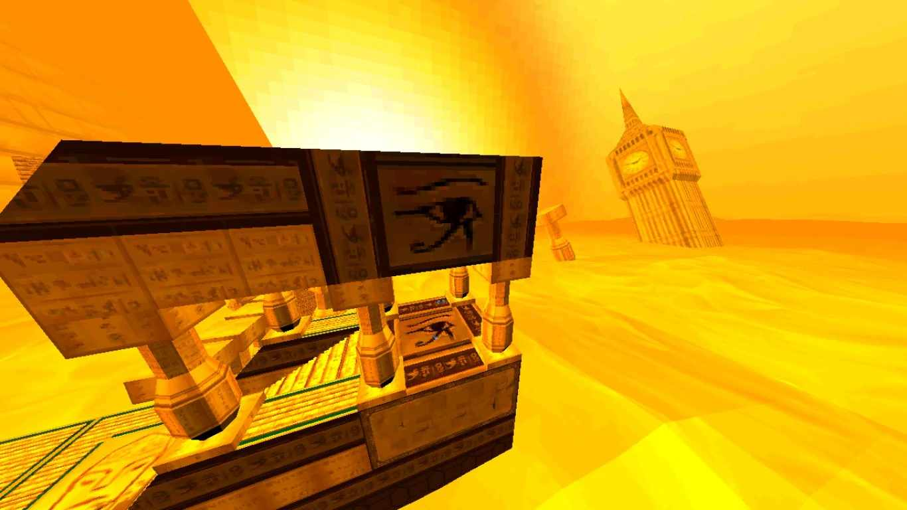
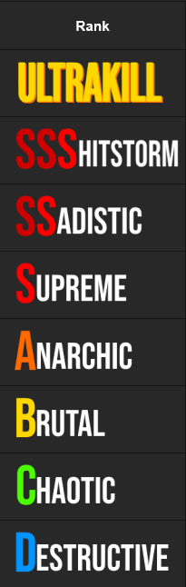
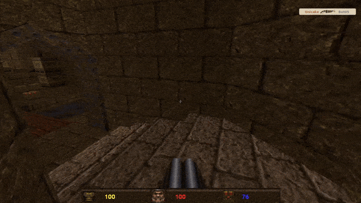
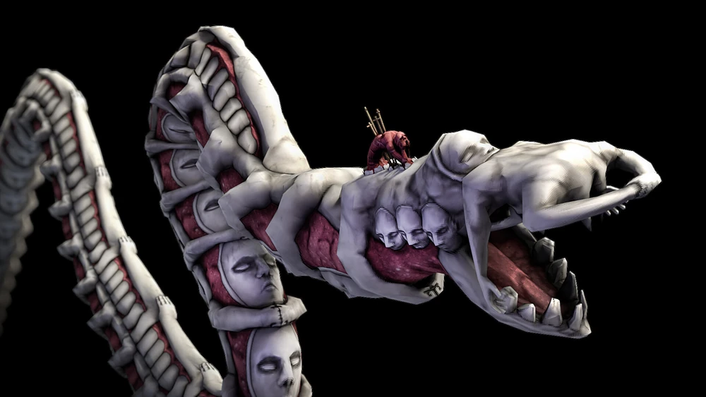
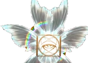
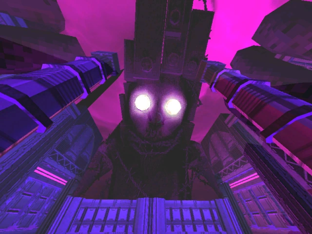

Mankind is dead. Hell is full. Blood is fuel.
ULTRAKILL Review by 4 dumbasses
Part 1: Lore

Part 2: Level & Weapon Design
Part 3: Game inspiration
Part 4: Public reception
Introduction to the game
In this game, you play as semi sentient, blood fuled robot named V1 that is currently making its way through
the various layers of Hell in search of blood as fuel, anhihilating anything and everything in its path, not
out of malice but rather out of a desire for survival.
Each layer, with its construction, colours and themes
can be directly traced back to Dante's Inferno, a book that can very much be considered a self insert
fanfiction about God and their work.
Eacher layer is divided in 4 or 2 levels, save for the prelude which has 5, depending on what one you are on
with the 2 level layers being the ones in which you fight the main "antagonist": the Archangel Gabriel.
As this game takes place in hell, it must come to no suprise that the ennemies you fight are hell themed.
However there is a little more to them than that as you have 5 enenmy types: Husks, Machines, Demons, Angels
and Prime Souls.
Throughout the story, you make your way deeper and deeper into hell as you encounter and defeat the then Judge of Hell who morphs into the Apostate of Hate
How the layers tie
into the story
Prelude: this layer serves as the tutorial for the game, introduction all the basic movement and combat mechanics. In it, you find what appears to be abandoned human made facilities overtaken my hordes of husks and demons. Why and when they are abandoned is as of yet unexplained but regardless, you press forward. You ultimately arrive at the gates of Hell upon which you find an inscription: Abandon hope all ye who enter here. Disregarding that warning, you dive straight in.

Limbo: as you arrive into hell, you are greeted not by rivers of magma nor the screams of the damned but rather a very peaceful and welcoming place. This however is all fake as you soon come to realise that the landscapes are projections, the bird noises and trees are fake, just like everything else in this place. As the unease starts to fill your mind, you encounter what seems to be a clone of yourself: V2. The newer and supposedly better model of you the player, V1. V2 however seems to be no match against you and as you defeat it, it retreats and drops its arm in the process, ever increasing your arsenal.

Lust: as you arrive, you are faced with a futuristic looking city filed with homes and monsters. In the far distance you make out the silouhette of a gargantuan looking beast with glowing eyes. As you progress, you learn that the silouhette is the corpse of King Minos, former ruler of the lust layer and Judge of Hell. He was supposedly struck down by Gabriel for going against the will of Heaven with his soul being placed in the Flesh Prison and his body later overtaken and controlled by parasites.

Gluttony: the moment you enter this fleshy abomination, you feel the presence of something greater, something ill intentioned. These fears turn into reality as you are faced with Gabriel, Judge of Hell whose soll purpose here is to anihilated you as you trample upon The Father's palace. After a hard fought battle, you emerge victorious with Gabriel having to retreat while promising to exact his revenge upon you. As you trace back your steps to explore more, you come across an ornate door which once opened, leads you into fighting the Flesh Prison, an eldritch entity housing the soul of King Minos. Upon being freed, Minos thanks you, however he hasn't forgiven your kind for the crimes they have committed against humanity and thus your hardest challenge yet starts. Using your entire arsenal, you manage to best him, though barely and as he disapears into the void, never to come back, he only expresses regret for not being able to help his people. And as you limp towards Greed, you start to wonder if you are truly the good guy.

Greed: as you step out of the hellavator, you are forced to behold the unforgiving and ruthless sun as it casts its gaze down onto the ever suffering sinners. Here you learn about King Sisiphus, a tyranical dictator who ruled with an iron fist and completely devoid of empathy, seeking only amusement for himself. He was craving a fight to the point that he started a war against Heaven itself, knowing full well that he would loose but he did not care, for he saw his own condition as meaningless. And just like King Minos, King sisiphus was slain by Gabriel with his armies being crushed without resistance after his defeat. Those who rebeled saw all their non essential limbs being torn from them with only the bare minimum left to fullfil their eternal punishment. Sisiphus's soul however was deeemd too dangerous by The Council of Heaven and was thus imprisoned 2 layers down, in Heresy. As you reach the exit into Wrath, you encounter V2, who is back with a vengeance but he stood even less of a match thanks to your new found experience and weaponery. This time however, you left it no chance to escape and as its body slams against the ground, you are now left alone as humanity's last and greatest weapon, with no match for you being left alive.

Wrath: you expect this layer to be full of blood and flesh but are instead greeted by a boundless ocean filled with billions upon billions of suffering souls that hail from The Great War, humanity's biggest stain upon creation. These souls are forced to constantly fight to stay afloat with those who give up sinking to the bottom and being absorbed by The Leviathan, an eldritch beast that feeds on the wailing souls that died over a pointless conflict. Here, you encounter the Ferryman, devotes of The Father who have been left behind, in absence of a purpose following the death of Mankind. They still endlessly toil away in hopes of being granted access into heaven for their deeds but to no avail, as the only angel who cares about their efforts being Gabriel whom has not the power to bring them up with him.

Heresy: as you enter, you are faced with the grim stench of burning flesh and death. This layer feels as though it will be nothing but bad omens with this suspition is quickly confirmed as Gabriel taunts you throughout, informing you of his location and is eagerness to enact revenge upon you. Nevertheless, you move ever forward, deeper into the depths of Heresy, ripping and tearing through the endless hordes, ready to face off against the now resentful Gabriel. As you enter his lair, you hear him playing the organ, taking about the death of the upper layers to your kind's bloodied hands, with you being the main culprit. You carefully enter the room in which he sits and upon sensing your presence, he gets up from the organ and morphs into the Apostate of Hate, a being of pure rancor with nothing left to loose after his previous defeat. His rage fully consuming him, turning the once pristine white of his heavenly armour into a bloody red, as you prepare to face him. He lunges at you with extreme speed and animosity, giving up the tauts that he was so happy to throw at you previously. The both of you fight with all your might and you emerge victorious with Gabriel almost relishing in his defeat as he sees the errors of his ways. He promises you one more fight before disappearing to put things in order. Feeling something amiss, you backtrack once more, encountering yet another ornate door, behind which lies a gauntlet of enemies, all guarding one thing: King Sisyphus's soul. You toil away at the waves of enemies until you free him from the Panopticon, after which he demands you to fight him before he tears down the cities of heaven. Being left with little choice, you engage the fight and after a valiantly fought battle, you emerge with the victory. Sisyphus however doesn't seem to care as all he wanted was a good fight, and you gave him the best one he could have ever wished for. And as he vanishes into the void like King Minos, you enter Violence.

Violence: you being a machine built for war, the unparalleled paragon of human war engeniering makes this layer the perfect one for you. Thus you confidently set foot into it, only to be faced with horrors beyond human comprehension. The deeper you go into this layer, the more you have to come to terms with the horrors your kind have inflicted upon humanity, as you see nothing but endless devastation caused by things like you. Things built during war with the sole purpose of eliminating the ennemies of your creators. With the blood circulating in you however, you start to develop what could be tantamount to sentience and thus, it makes every elimination feel that much worse. You aren't doing this out of pleasure but for survival as without this fresh blood, your are doomed to malfunction and die. So you continue the slaughter, encountering new war machines along the way that you make quick work of but can't stop to think about how they too might have some level of sentience, which seperates them from mindless husks or hell spawn. Then, in the deepest parts of this scorched plane, you encounter the one entity that still rivals you, The Earthmovers, what used to be the pinnacle of human cruetly before you came into existence to defeat them. The Earthmover knows this and upon seeing you, panic flashes before its many eyes as it tries to hit you with its energy spear, only to be interupted by shot from a fellow Earthmover barely within sight. You take this opportunity to go into its circuitry, only to find out that a city exists here, used as humanity's last bastion of hope, a bastion of hope filled with constant fear and despair with death being capable of happening at any moment, but is now left devoid of life. Leaving that thought behind, you make your way up to the central control panel and end the Earthmover's life, clearing the way to enter Fraud.

Layer 8, Fraud: ???
Layer 9, Treachery: ???
Story Conclusion
Overall, this game posses a very intricate and interesting story that takes its roots in many of media's
most well known places. I skipped over a LOT of details when writting this and thus it does lack a lot of
the nuances and thoughts the game throws at you but it is a pretty good overview of things.
I would rate the story in this game as a solid 9.5/10
Explaining the layers
and
their construction
Prelude: In this layer, you go through what appears to be abandoned human contructions, with it all
culminating into a door stating "abandon hope, all ye who enter here", which is a nod towards the
inscriptions on the gate to hell in Dante's Inferno. The reason the place is baren is mostly unkown with the
best guess being that humanity must have simply left it behind at some point and if they are still around
currently is unkown.
Inspiration
Combo


Image Ref: https://ultrakill.wiki.gg/wiki/Style
In 2001, the game Devil May Cry was released, introducing an original and evolving combo system. In DMC, your gameplay, the number of hits you receive, and the diversity of your combos play a huge role in the combo you achieve during a fight. But that's not the only rating, indeed, at the end of each level, a final rating is awarded, combining your fighting style, the number of resurrections, and the time taken to complete the level. Ultrakill adopts almost all of these principles, with a rating during each fight ranging from E to S that varies depending on weapon diversity, the number of hits received, and a final rating based on the level's duration.
game style

Another major inspiration for Ultrakill is the game DOOM, released in 1993. It draws heavily on this game for its rather dated and pixelated art style. Similarly, the regeneration system is the same, as healers must finish off enemies with a punch. The inspiration isn't limited to this; the lore is also inspired by DOOM. Indeed, you descend into Hell to kill as many demons as possible in order to purify it. Naturally, the monsters are also inspired by DOOM, but we'll come back to that later.
Dynamism of the fight


Ultrakill is a very dynamic game with extremely fast-paced action, rarely giving you a moment to breathe. Its inspiration comes from the game Quake, released in 1996. Quake is a very dynamic game where the character is viewed from a first-person perspective with various firearms; the player moves very quickly and is constantly on the move. Ultrakill is quite similar, with the player having a lot of horizontal and vertical movement at very high speeds.
The lore




For its lore, Ultrakill draws heavily on mythology and also on a collection of poems called the Divine Comedy by Dante (which also inspired DMC). Indeed, Ultrakill presents us with different levels of Hell, shown here through the game's stages. This comes from the Divine Comedy, which depicts Hell in seven distinct levels, each different from the others. But the mythology doesn't stop there; a descent into Hell inevitably involves demons and angels, so naturally, our enemies belong to this category. We must therefore confront angels and demons on each level.
The art and music

Finally, let's talk about the musical and artistic inspiration. To begin, as mentioned earlier, the art style is heavily inspired by older games, but not exclusively. Ultrakill features very different styles in each level; one floor might be lush greenery, while the next plunges you into a highly technological world. Other levels are inspired by Egypt, and naturally, others represent hell, with blood and red everywhere. For the music, Ultrakill opted for very powerful and shocking tracks, like metal, allowing the player to stay focused and fully immersed in the fight without the music becoming repetitive. This prevents the player from getting bored, as they might hear it repeatedly after dying. There's also a slight influence from DMC, which also features very violent and dynamic music for each fight.
What are the reviews ?
PROs
---
CONs
---
*It seems that ultrakill didn't have any haters : the Steam rating is 97%
positive…
and a lot of 'negative' reviews are just reviews that make a bad joke and then say that the game
is
a masterpiece ...
But I still found some serious reviews !
Conlusion
To conclude,I can give an external point of view as someone who
does
not know the
game: the universe, the game design, and the movement make a unique atmosphere; when you watch or
read reviews, it makes you want to play it.
But keep in mind that it can be a demanding game, with its mechanics, as well as all the knowledge
about enemies, weapons, and their variations. You have to spend time to truly appreciate this game.
If you only play occasionally, then you might miss out on it.